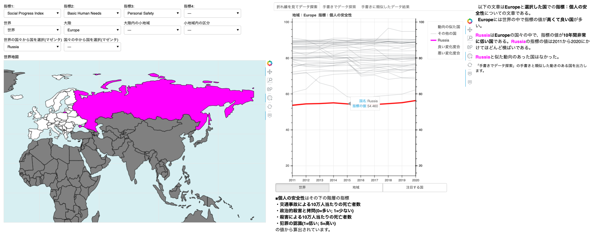

<!DOCTYPE html>
<html xmlns="http://www.w3.org/1999/xhtml" lang="" xml:lang="">
<head>
  <meta charset="utf-8" />
  <meta name="generator" content="pandoc" />
  <meta name="viewport" content="width=device-width, initial-scale=1.0, user-scalable=yes" />
  <meta name="author" content="牧 修平 (東京工業大学)" />
  <title>時系列データに対する説明的可視化</title>
  <style>
    code{white-space: pre-wrap;}
    span.smallcaps{font-variant: small-caps;}
    span.underline{text-decoration: underline;}
    div.column{display: inline-block; vertical-align: top; width: 50%;}
    div.hanging-indent{margin-left: 1.5em; text-indent: -1.5em;}
    ul.task-list{list-style: none;}
    div.csl-bib-body { }
    div.csl-entry {
      clear: both;
    }
    .hanging div.csl-entry {
      margin-left:2em;
      text-indent:-2em;
    }
    div.csl-left-margin {
      min-width:2em;
      float:left;
    }
    div.csl-right-inline {
      margin-left:2em;
      padding-left:1em;
    }
    div.csl-indent {
      margin-left: 2em;
    }
  </style>
  <link rel="stylesheet" href="etc/page.css" />
  <script src="https://cdn.jsdelivr.net/npm/mathjax@3/es5/tex-chtml-full.js" type="text/javascript"></script>
  <!--[if lt IE 9]>
    <script src="//cdnjs.cloudflare.com/ajax/libs/html5shiv/3.7.3/html5shiv-printshiv.min.js"></script>
  <![endif]-->
</head>
<body>
<header id="title-block-header">
<h1 class="title">時系列データに対する説明的可視化</h1>
<p class="subtitle">Explanatory Visualization for Time Series Data Shuhei MAKI</p>
<p class="author">牧 修平 (東京工業大学)</p>
</header>
<h5 class="af1" id="abstract">ABSTRACT</h5>
<!-- データを理解しやすくするために様々な可視化手法が使われているが、スケーラビリティやデータの構造の関係で、伝えたいデータの特徴を可視化から認識することが難しい可能性がある。
そこで可視化に加えて、データの特徴を言葉によって提供する研究が行われている。
本論文では、Social Progress Indexというアイテム数の多い時系列データを例に、データの分析をサポートする可視化と、テンプレートベースで生成したデータの要約文を提供するシステムを提案する。
また本論文では、時系列データの形からデータを探索する方法、データの要約文を生成するテンプレートの構成について説明する。
最後にケーススタディを通してシステムの用性を示す。 -->
<p>Various visualization methods are used to make data easier to understand, but due to scalability and data structure, it may be difficult to recognize the features of the data we want to convey from the visualization. Therefore, in addition to visualization, research has been done to provide the features of data by words. In this paper, using the Social Progress Index, a time-series data with a large number of items as an example, we propose a system that provides visualizations to support data analysis and template-based summary sentences of the data. In this paper, we also explain how to search for data in the form of time series data and how to construct templates to generate summary text of the data. Finally, we show the usability of the system through a case study.</p>
<p>Keyword: Time Series Data, Explanatory Visualization</p>
<h1 id="はじめに">はじめに</h1>
<!-- もっと丁寧に書いたほうがいいでしょう。各段落ごとに主張したいことはひとつに絞り、そのひとつずつの主張について、根拠や文献を示して根拠を説明することが大切です。 -->
<p>生のデータを見るだけでは分析したり理解したりするのが難しいデータに対して、その分析や理解のために可視化を行う研究はたくさん行われてきている<span class="citation" data-cites="bryan2016temporal Gschwandtner2018KnowYE gortler2019stippling sondag2020uncertainty">(Bryan, Ma, and Woodring 2016; Gschwandtner and Erhart 2018; Görtler et al. 2019; Sondag et al. 2020)</span>。 しかし可視化によるデータの分析や理解に不慣れなユーザや、可視化では特徴を正しく伝えきれないデータを分析したいユーザに対しては、データの可視化だけでその目的を達成することができない可能性がある<span class="citation" data-cites="ynnerman2018exploranation">(Ynnerman, Löwgren, and Tibell 2018)</span>。 そこで文章と可視化の二つの方法を相互的に使ってデータの説明をする、<strong>説明的可視化</strong>が研究されてる<span class="citation" data-cites="hosokawa2020scalable latif2019interactive">(Hosokawa, Arimoto, and Wakita 2020; Latif and Beck 2019)</span>。 説明的可視化は、文章によってもデータの特徴を提供するため、可視化に精通するユーザーに対しても有益なアプローチである。</p>
<p>時系列データは日常の気温や降水量、近年では新型コロナ感謝数の推移など様々な場面で扱われているデータである。 時系列データは必ずしも同様の事柄に対して一つのデータだけではなく複数のデータ項目が存在することがある(世界各国の新型コロナ感謝数の推移など)。このようにデータ項目数の多い時系列データは可視化による理解が困難になる。 <!-- ????? --> そのような時に、説明的可視化を使うことで可視化だけではなく、文章によってデータの特徴を伝えることができる。 そこで本研究では<a href="https://www.socialprogress.org/">Social Progress Imperative</a>が10年にわたって発表しているSocial Progress Indexのデータ<span class="citation" data-cites="SPI">(Social Progress Imperative n.d.)</span>を例として、説明的可視化による時系列データの理解と探索を行う手法を提案する。 以下Social Progress IndexのデータのことをSPIデータと記述することにする。</p>
<p>2章では説明的可視化と時系列データの可視化について関連研究をまとめ、3章でシステムの設計について述べる。 4章ではシステムのユースケースを通してシステムの有効性を説明し、5章と6章で考察とまとめを行う。</p>
<h1 id="関連研究">関連研究</h1>
<p>この章では、今まで研究されてきた説明的可視化や時系列データに対する可視化をみていく。 <!-- Fig 1,2,3 --></p>
<!--  -->
<figure>
<figcaption aria-hidden="true">Figure 1: interactive Map Reports</figcaption>
</figure>
<p>Latifら<span class="citation" data-cites="latif2019interactive">(Latif and Beck 2019)</span>は、二変量の地理統計データを理解するためにinteractive Map Reports(以下iMR)システムを開発し、説明的可視化を行っている。 地図上の行政区の色や行政区に関する統計量を表すグリフを使って二つの地理統計変数を可視化するとともに、データを解析して文章を自動生成しているのを、いくつかの例を上げながら説明している。 図1はその例の一つであり、アメリカ合衆国の各州の年間の死亡者数とハリケーンの発生数に対してiMRのシステムを使用したものである。 生成された文章には、「The average number of deaths per state was 14.9, … (死亡者数の平均値が14.9万人だった。…)」などの統計的な特徴をはじめ、「Southern states faced higher number of deaths and storms compared to the other states..(南部の州は、他の州と比べて死亡者数やハリケーンの発生数が多い。)」など、特定の州のデータの特徴だけではなく、データの分布から見つかる地理的な偏りなどのデータの特徴も言葉で説明されている。 iMRでは文章生成を行うプロセスを自身で定義し、ユーザーの要望に合わせてパラメータを変更することで柔軟な文章を自動で生成している。 iMRは先で述べたようなデータの特徴を文章によって伝えることができるが、特徴が多い時にはシステムの画面からはみ出るほどの量の文章が生成されてしまい、ユーザーの負担になってしまう。</p>
<figure>
<figcaption aria-hidden="true">Figure 2: SPIViewer</figcaption>
</figure>
<p>Latifらが開発したiMRは二変数のみの地理統計量データに対応していたが、Hosokawaら<span class="citation" data-cites="hosokawa2020scalable">(Hosokawa, Arimoto, and Wakita 2020)</span>は2019年のSPIデータを使い、データ項目数が多く、多変数の地理的統計量のデータに対して説明的可視化を行うSPIViewerを開発した。 Hosokawaらはこのデータの特徴をユーザーに伝えるために、指標の階層性と国々の地理的階層を利用して文章を生成している。 図2のでは、「機会」という指標とその子孫の指標について北アフリカの国々とサブサハラアフリカの国々を比較して文章を生成している。 また、棒グラフを用いて一つの指標に対するデータの分布を表現したり、散布図を用いて二つの指標に対するデータの分布を比較したりすることができる。 SPIViewerはSPIデータの階層性を活用してデータの特徴を文章によって伝えているが、時系列データに対してはサポートしていない。</p>
<!--  -->
<figure>
<figcaption aria-hidden="true">Figure 3: Gapminder</figcaption>
</figure>
<p>時系列データの特徴を伝えるために可視化を使った研究は複数存在する<span class="citation" data-cites="andrienko2020visual bryan2016temporal van1999cluster">(Andrienko et al. 2020; Bryan, Ma, and Woodring 2016; Van Wijk and Van Selow 1999)</span>。そのなかでRoslingら<span class="citation" data-cites="rosling2011health">(Rosling and Zhang 2011)</span>は、データ項目数の多い二つの地理統計変数データを可視化するために、バブルチャートとアニメーションを用いたGapminderというシステムを開発した(図3)。 時間に沿って動くバブルの位置や位置の変化によって、世界各国の二つの統計量の変化を提供している。 しかしGapminderでは、どのデータの特徴に注目するかはユーザーに全て任されていた。 そこでLuら<span class="citation" data-cites="lu2020illustrating">(Lu et al. 2020)</span>は、Gapminderのアニメーションの中で注目すべきタイミングを抽出する研究を行った。 Luらは時系列データの変化の傾向が変化した期間をデータ解析から特定して、時間を表すバーの中にその期間を表示している。 RoslingやLuらの研究は、データを解析して誰かにデータの特徴を伝えるプレゼンテーションを目的にしているため、データの探索するためのサポートは行われていない。</p>
<p>本研究では、データ項目数の多い時系列データの特徴を可視化と文章にをユーザーに提示し、その後のデータの探索をサポートするシステムを設計する。 文章生成において、Latifらを参考にしてテンプレートベースで文章を生成する。 その時に文章の量が多くならないようにHosokawaらのようにデータの構造に注目して文章を生成する。 本研究では、SPIデータの国の地理的な階層性だけに注目して文章を生成しており、指標の階層性に注目した時系列データに対する文章生成は今後の研究課題とする。 また、Luらが行った手法を参考に時系列データを解析して、時系列データの特徴を説明する。 生成される文章の量を短くするために、解析する時系列データをユーザーの探索に合わせて選択する。</p>
<h1 id="システムの設計">システムの設計</h1>
<!-- 本研究では、アイテム数の多い時系列データの特徴を可視化と文章にをユーザーに提示し、その後データの探索をサポートするシステムを設計する。
文章生成において、Latifらを参考にしてテンプレートベースで文章を生成する。
その時に文章の量が多くならないようにHosokawaらのようにデータの構造に注目して文章を生成する。
本研究では、SPIデータの国の地理的な階層性だけに注目して文章を生成しており、指標の階層性に注目した時系列データに対する文章生成は今後の研究課題とする。
また、Luらが行った手法を参考に時系列データを解析して、時系列データの特徴を説明する。
生成される文章の量を短くするために、解析する時系列データをユーザーの探索に合わせて選択する。 -->
<!-- Fig 4 -->
<p>説明的可視化を通して、データ項目数の多い時系列データの探索をサポートするシステムを設計する。 この章では課題からシステムの要件を定め、SPIデータを例にどのようにシステムを設計したのかを説明する。</p>
<figure>
<figcaption aria-hidden="true">Figure 4: This figure shows the application of the system to the Social Progress Index dataset. In (a), the user can select the country, geographical area, and SPI index user wants to focus on. In (b) and (c), time series data visualization and automatically generated sentences are displayed according to the selection made in (a). In (d) is a world map to show the location of the country and geographical area of interest. (e) shows the definition of the SPI index to be selected in (a).</figcaption>
</figure>
<!-- 要件 -->
<h2 id="要件">要件</h2>
<!-- 以上の問題をもとに以下のように要件を定めた。 -->
<p>データ項目数の多い時系列データに対する本研究におけるシステムの要件を定める。</p>
<p><strong>R1 時系列データの変化の特徴</strong>: 同じ属性に対して時系列データが複数存在するとき、時系列データの値の変化は、他のデータの分布によって捉え方が変わる。 例えば同じ1から2への変化でも、0から100の値を取る属性においては小さな変化、もしくはほとんど変化していないと捉えることができるが、0から10の値を取る属性においては大きな変化として捉えることができる。 そこでデータを自動で解析して時系列データの変化に対する特徴を提供する必要がある。</p>
<p><strong>R2 データの関係性から見た概要</strong>: データのなかには、データ項目間に階層性や包含など何かしらの関係が存在したり、データ項目に位置情報が関連づけられたりすることがある。 そのようなときに、データの特徴を理解させるために、関係性やデータ項目に関連づけられた情報から見たデータの特徴も提供する必要がある。</p>
<p><strong>R3 データ項目を絞ったデータの探索</strong>: データ全て解析してデータの特徴を全て可視化と文章で提示したとしても、ユーザーがその特徴を全て認識することができない。 ユーザーが注目したいデータ項目だけに絞ったデータの探索をサポートする必要がある。</p>
<!--                        可視化について                -->
<h2 id="設計">設計</h2>
<p>SPIデータを扱った例で、システムの設計を説明していく。</p>
<h3 id="spiデータ">SPIデータ</h3>
<p>SPIデータがどのようなデータか、どのような構造があるかを述べる。 SPIデータは、Social Progress Indexという指標で世界各国を評価したもので、指標は70個ほど存在する。 SPIの指標は、経済指標とは独立した実質的な生活の質の総合的な指標で世界各国を評価したものであり、社会の成功度合いを測るためにGDPなどの経済指標を補完するものとして設計されている。 SPIデータでは、世界の各国をデータ項目としている。 国はアジアやアフリカなどと州単位でまとめたり、東アジア、東南アジアなどといった州の中でも細分化された集合でまとめたりすることができる。 つまりSPIデータにおいて、地理的範囲による階層構造の関係が存在すると考えることができる。 しかし、SPIデータには地理的な階層の情報が含まれていないので、<a href="https://www.un.org/">国連</a>が提供している、地理的範囲の階層についてのデータ<span class="citation" data-cites="unsd2003united">(UNSD 2003)</span>を追加で扱う。</p>
<h3 id="可視化と文章生成">可視化と文章生成</h3>
<p>SPIデータをもとに、三つの要件に対してどのようにシステムを設計したか述べる。</p>
<p><strong>データの選択</strong>: 探索する時に、ユーザーが注目したいデータ項目を絞れるようにする(<strong>R3</strong>)。 SPIデータでは、注目する国と指標に加え、先に述べた地理的範囲によるデータ項目の選択をできるようにする(図4a)。 また、後に述べるインタラクションを導入することでこのデータ項目の選択を、より探索のニーズに沿って実現できるようにした。</p>
<p><strong>傾向の変化する点</strong>: 時系列データの変化の特徴として、時系列データの傾向を調査する(<strong>R1</strong>)。 そして時系列データの変化の傾向についてと、傾向の変化があるときには変化があった点をユーザーに提供する。 まず時系列データ似たいして線形回帰を行い、一次の直線を求める。 その直線と元のデータに対して、全ての年でデータの差が閾値より小さい場合には単調な変化をしていると捉える。 この閾値は指標に対する全てのデータ項目の値に依存しているため、この閾値を用いることでデータの変化が大きいか小さいかを判断することができる。 変化が単調な場合は、線形回帰直線の傾きから、「10年間大きく上昇している。」や「10年間ほとんど横ばいである。」などといった変化の概要を捉える。 一方どこかの年でデータの差が閾値以上であれば、傾向の変化がある可能性があるとみなす。 次にJunhuaらと同様にWin法<span class="citation" data-cites="truong2020selective">(Truong, Oudre, and Vayatis 2020)</span>を活用して、データの傾向が変化する点を調査する。 時系列データを<span class="math inline">\((x_1,x_2,...,x_n)\)</span>として、<span class="math inline">\((x_{i},x_{i+1})\)</span>の線形回帰直線の傾き<span class="math inline">\(m^{(1)}_i\)</span> <span class="math inline">\((1\leq i\leq n-1)\)</span>と、<span class="math inline">\((x_{i},x_{i+1},x_{i+2})\)</span>の線形回帰直線の傾き<span class="math inline">\(m^{(2)}_i\)</span> <span class="math inline">\((1\leq i\leq n-2)\)</span>を求める。 次に<span class="math inline">\(d^{(j)}_i=|m^{(j)}_{i+1}-m^{(j)}_{i}|\)</span> <span class="math inline">\((j=1,2\ \ 1\leq i\leq n-1-j)\)</span>を求める。 <span class="math inline">\(j=1,2\)</span>両方に対して、<span class="math inline">\(d^{(j)}_i\)</span>が閾値以上であるとき、<span class="math inline">\(x_{i+1}\)</span>の点を時系列データの傾向が変化した点として判断する。 この閾値も、指標に対する全てのデータ項目の値に依存している。 この計算は、直近の左右のデータの傾きの差が大きい点をデータの傾向の変化があった点と見なしている。 このとき、<span class="math inline">\(d^{(1)}_i\)</span>は短い時間間隔でのデータの変化を、<span class="math inline">\(d^{(2)}_i\)</span>は少し長い時間間隔でのデータの変化を捉えることができる。</p>
<p><strong>類似しているデータ項目</strong>: 注目するデータ項目に対して、類似した変化と値をとっているデータ項目を探る(<strong>R1</strong>)。 SPIデータでは、注目する国のデータに対してデータの変化が類似している国を求める。 注目する国に対して、時系列データの相関係数が大きい国々の集合<span class="math inline">\(C\)</span>を集める。 <span class="math inline">\(C\)</span>の中の国のデータ<span class="math inline">\(c_i\)</span>と注目する国のデータでユークリッド距離<span class="math inline">\(d_i\)</span>を計算する。 その距離<span class="math inline">\(d_i\)</span>がある閾値未満であれば、国<span class="math inline">\(c_i\)</span>を類似している国とする。 この閾値も先ほどと同様に、指標に対する全てのデータ項目の値に依存している。 二つの時系列データの上昇や減少などの大まかな変化が一致していることを相関係数によって絞り、注目する国と値が近く似た変動をする国を抽出するするために、時系列データのユークリッド距離を用いてる。</p>
<p><strong>データの概要の可視化</strong>: 時系列データの詳細な特徴と、属性に対する全てのデータ項目のデータの分布をユーザーに伝えるために、折れ線を利用しる(図4b)。 データ項目数の多い場合では、多くのデータが重なって表示されるためにこの恩恵を受けることができない。 データ項目数の多い折れ線からでも詳細なデータを提供できるように、特定のデータに対する折れ線をハイライトしたり、表示するデータを絞ったりする(<strong>R1,R3</strong>)。 注目したい国と類似している国に対するデータをハイライトする。 またデータの概要を提供するために、注目するデータ項目の時系列データの傾向が変化する点をドットを用いて表現しつつ、色を他の表現と異なるマゼンタ色を使う。 類似しているデータ項目に関してはダークカーキ色を使う。 ドットの色は傾向の変化がその指標の中でいい変化であれば白を、悪い変化であれば黒をドットの色に使って表現する。 複数傾向の変化があった点が存在する場合、その変化の大きさをドットの大きさを使って表現する。</p>
<p><strong>地理的範囲の表示</strong>: データ項目に関連づけられている位置情報をユーザーに提供する(<strong>R2</strong>)。 SPIデータでは、データ項目が世界各国に対応しているため、ユーザーが注目するデータ項目や地理的範囲を世界地図に表示する(図4d)。 注目する国と、類似している国については、それぞれ折れ線と同様の色で表現する。 選択された地理的範囲に含まれていない国々と、データが存在しない国は灰色で表されている。 これによって、ユーザーが注目する国と地理的範囲の国々とで地理的な関係を探索することができる(<strong>R3</strong>)。</p>
<!--                 文章生成について                       -->
<p><strong>文章生成</strong>: 可視化で伝えたいデータ特徴や、探索の手がかりとなるデータの特徴などを文章で伝える(図4c)。 文章はLatifらやHosokawaらと同様に、テンプレートベースで生成する。 文章は以下のデータ特徴について、データを解析して生成した。</p>
<ul>
<li><p>選択した地理的範囲に含まれるデータ項目群が、世界から見て指標の値が低いか高いか(<strong>R2</strong>)。 例: アメリカには世界の国々の中で社会進歩指標が低い国から高い国まで幅広く存在する。</p></li>
<li><p>選択した地理的範囲の子の階層の地理的範囲で、指標の値が高い、もしくは低いデータ項目が多いなどのが偏りがあるか(<strong>R2</strong>)。 例: アメリカの中では北アメリカに社会進歩指標が高い国が多い。</p></li>
<li><p>注目するデータ項目の指標に対する値が、選択した地理的範囲のデータ項目群の中で低いか高いか(<strong>R1,R2</strong>)。 例: コスタリカはアメリカの国々の中で社会進歩指標が高い。</p></li>
<li><p>注目するデータ項目のデータはどのような動向があったか(<strong>R1</strong>)。 例: コスタリカの社会進歩指標の値は、2011年から2020年にかけてほとんど横ばいである。</p></li>
<li><p>選択した地理的範囲のデータ項目群の中で、注目するデータ項目と類似しているデータ項目について(<strong>R1</strong>)。 例: コスタリカと似た動向のある国は、チリとウルグアイである。</p></li>
</ul>
<!--                 インタラクションについて                             -->
<h3 id="インタラクション">インタラクション</h3>
<p>ユーザーが可視化や文章からデータを探索できるように、インタラクションを導入する。</p>
<p><strong>ズーム</strong>: 折れ線の表示において、地理的範囲のデータ項目群や注目したいデータ項目のデータの変動をより詳細に観察できるように、ボタンによって縦軸の範囲を調整できるようにしている。 世界のデータの範囲を縦軸にすることで、地理的範囲に含まれるデータ項目群のデータが、世界と比べてどのような値をとっているか、その分布を確認することができる。 注目するデータ項目のデータだけに興味があるときは、そのデータの詳細が確認できる大きさにグラフの縦軸を調整する。 選択した地理的範囲のデータ項目のデータの範囲を見ることは、データの分布が地理的範囲によって偏りが大きい時に役立つ。</p>
<p><strong>フィルタリング</strong>: 折れ線の表示において、表示する折れ線をフィルタリングする機能を実装した。 注目するデータ項目、類似しているデータ項目、その他のデータ項目のデータそれぞれで表示するか非表示にするか選ぶことができる。 類似しているデータ項目が多いときにそれらを非表示にすることにより、注目するデータ項目と類似していない国を調べることができる。 一方、類似しているデータ項目に注目したいときには、類似していないデータ項目を非表示にすることができる。</p>
<p><strong>クエリ</strong>: 時系列データを見るとき、特徴的な変化から探索したい可能性がある。 そこで、ユーザーのフリーハンドや用意した折れ線の形を入力としてデータを探索できるようにした。</p>
<p><strong>関連付け</strong>: 折れ線、世界地図、文章と三つの方法でデータの特徴を提供しているが、同じデータ項目に関する折れ線や地図、文字は同じ色で表現している。 これにより、同じデータ項目に関するデータの特徴の理解を促進できる。</p>
<p><strong>データ項目の選択</strong>: ユーザーが欲しいデータの特徴を入手できるように、いくつかの視点でデータ項目を選択できる機能を実装した。 折れ線の表示においては折れ線を選択することで、世界地図からは国を選択することで、注目するデータ項目を変更できるようにしている。 これにより、データの変動の仕方や地理的な位置から、興味のあるデータ項目の特徴を得ることができる。</p>
<h1 id="ケーススタディ">ケーススタディ</h1>
<!-- Fig 5,4,6,7,8,9 -->
<p>この章では提案するシステムが三つの要件、<strong>R1 時系列データの変化の特徴</strong>,<strong>R2 データの関係性から見た概要</strong>,<strong>R3 データ項目を絞ったデータの探索</strong>を満たされていることを示す。</p>
<figure>
<figcaption aria-hidden="true">Figure 5: An example of using the system with Personal Rights as the index, the Americas as the geographical area, and the United States as the country of interest. It can be seen from the line chart that the United States has the highest value of Personal Rights in the Americas, and that it has been gradually decreasing for 10 years. It can be also seen that there are countries in the Americas with high and low values of the index, and that there are many countries in North America with high values of the index among the Americas.</figcaption>
</figure>
<p>図5は地理的範囲を「南北アメリカ」、指標を「個人の権利」、注目するデータ項目を「アメリカ合衆国」にした例である。 アメリカ合衆国は南北アメリカの中で最も個人の権利の値が高いこと、10年間徐々に減少していることが折れ線から読み取れる(<strong>R1</strong>)。 文章の地理的階層に直目した内容として、南北アメリカの国々は指標の値が高い国から低い国まで存在することや、南北アメリカの中で北アメリカには指標の値が高い国が多いことが書かれている(<strong>R2</strong>)。 これらのことは、折れ線のデータの分布を確認したり、選択する地理的範囲を北アメリカに変更したりすることで確認することができる。 次に注目する国に関しての内容で、アメリカ合衆国が南北アメリカの中で指標の値が高いことや、10年間緩やかに減少していることがわかる(<strong>R3</strong>)。 このことも折れ線のデータの変化や分布などから読み取ることができる。</p>
<figure>
<figcaption aria-hidden="true">Figure 6: A comparison of data from Japan and Australia on access to information and communication shows that they are very similar.</figcaption>
</figure>
<p>他の国や指標についてもみていく。 図4は地理的範囲を「世界」、指標を「情報通信へのアクセス」、注目するデータ項目を「日本」にしている。 先ほどと異なってわかる特徴として、2013年に指標の値の変化の傾向が変わったことが折れ線からわかる。 このとき、情報通信へのアクセスが伸びることは良いことなので、その上昇率が下がることはよくない変化として黒のドットに表されている。(<strong>R1</strong>) 他には、類似している国に、オーストラリアがあることがわかる。 類似していない国の表示を隠すと、日本とオーストラリアのデータは非常に似ていることが確認できる。(図6) 次に文章の方をみていく(図4右)。 先ほどと同様に世界の国々の中で、オセアニアには指標の値が低い国が多く、ヨーロッパには指標の値が高い国が多いことがわかる(<strong>R2</strong>)。 国の特徴として、日本は2011年から2013年にかけてこの指標が大きく上昇したことを文章からも確認できる。</p>
<figure>
<figcaption aria-hidden="true">Figure 7a</figcaption>
</figure>
<figure>
<figcaption aria-hidden="true">Figure 7b</figcaption>
</figure>
<figure>
<figcaption aria-hidden="true">Figure 7c: An example where the indicator is personal safety and the geographic scope is Europe. The central figure in (a) shows that Russia has the lowest value for the indicator in Europe. In (b), the country of interest is Finland, and it can be seen that countries with similar data to Finland are clustered from west to north in Europe. Belgium, the only country in the west of Europe whose data was not similar to Finland’s, showed a decrease in the value of the indicator from 2015 to 2016, as can be seen in the central figure in (c).</figcaption>
</figure>
<p>最後に別のアプローチでデータを探索していく。 図7aは地理的範囲を「ヨーロッパ」、指標を「個人の安全」とした例である。 まず折れ線をみるとデータが他のデータ項目より値が低いデータ項目があるのがわかる。 ホバーすると、それがロシアであることがわかる。 タップすると注目する国が「ロシア」に変わり、文章として詳細なデータの特徴を得ることができる。 文章から、やはりロシアは指標の値がヨーロッパの中で非常に低いことがわかる(図7a右)。 次にロシアと隣接している国は類似していない国ということから、それらの国データが気になる。 ロシアの北西に位置する「フィンランド」を地図から選択してみる(図7b)。 すると、ロシアとは異なりフィンランドは指標の値が高いことが折れ線の分布(図7b中央)からわかる。 また地図(図7左)より、フィンランドとデータが類似している国がヨーロッパの西から北に集まっていることがわかる(<strong>R2</strong>)。 しかし西側のベルギーという国は、フィンランドとデータが類似している国に含まれていない。 そこでベルギーのデータを見てみると、ベルギー2015年までは周辺諸国と同じような値をとっていたが、2016年で大きく減少していることがわかる(<strong>R1</strong>)。</p>
<h1 id="考察">考察</h1>
<p>この章では3章で定めたシステム設計の三つの要件をどのように満たしているのか、システムの利点や欠点などを議論し、今後の研究課題について述べる。</p>
<h2 id="要件に対する充足">要件に対する充足</h2>
<p>三つの要件に対してシステムを設計し、ケーススタディを通してシステムの有用性を示した。</p>
<p><strong>R1 時系列データの変化の特徴</strong>: データを解析することで、データの傾向の変化する点を特定した。 またその点を折れ線の中にドットして表現した。 文章の中では、データの変化の傾向や、傾向が変化した点について述べた。</p>
<p><strong>R2 データの関係性から見た概要</strong>: 個人の権利という指標で、北アメリカの国々が南北アメリカに対して値が高い国が多いことがわかるように、文章の中で地理的階層の特徴を提供した。</p>
<p><strong>R3 データ項目を絞ったデータの探索</strong>: 注目するデータ項目、地理的範囲、指標に応じて可視化と文章を生成した。 フィルタリングによって表示するデータ項目数を絞流ことができるようにしている。 また、注目するデータ項目の選択においては、データの形や地理的な位置から選択できるインタラクションを実装した。</p>
<h2 id="システムの利点問題点">システムの利点,問題点</h2>
<p>次にこのシステムの利点と問題点を考察していく。</p>
<h3 id="利点">利点</h3>
<p>このシステムによって、データの分析における以下のような利点がある。</p>
<ul>
<li><p>元のデータからは見つけづらかった地理的階層に沿った特徴を、文章による概要から入手することができた。 これは地理的範囲を変更することで実際にデータと示し合わせることができる。 また、一度に複数の小さな地理的範囲の特徴を提供することができるのは有効だと考えている。</p></li>
<li><p>名前からデータ項目を選択するだけではなく、折れ線を用いたデータの形や分布、地図を用いた国お位置からデータ項目を選択することができた。 データの形や注目している国と地理的に近い国のデータの関係などから、データを分析したくなることは自然であり、そのニーズに対応している。</p></li>
<li><p>データの類似した国を折れ線や地図を通して提供することで、次の分析への手がかりになった。</p></li>
</ul>
<h3 id="問題点">問題点</h3>
<p>今回のシステムに利点がある一方で、以下のような問題点があった。</p>
<ul>
<li><p>注目する国とその国に類似する国は地図上で色を変更したが、ガンビアのような国土面積が小さい国は色から場所を見つけることができない。 現在は国全体を色付けしているが、小さな国に対しては、国を中心とした円を表示するなど別の表現方法が必要かもしれない。</p></li>
<li><p>データの地理的分布の概要をみることができない。 地図常にデータの値を表現する変数を実装していない。 iMRのようにドットを用いて、大きさでデータの値を表すか国に使用している色で表すかなどの変更が必要になる。 しかし色を用いる際には、注目する国や類似した国をどのように表現するかが新たな問題となる。</p></li>
<li><p>選択している指標以外に対するデータの特徴がユーザにほとんど与えられておらず、SPIデータ全体を通した有益な探索と分析を行うことができない。 Jinwookら<span class="citation" data-cites="seo2005rank">(Seo and Shneiderman 2005)</span>は多くの二次元散布図を相関やエントロピーなどさまざまな指標で評価し、ランクをつけて提供する研究を行っている。 本研究のシステムでも、全ての指標に対して何かしらの基準で図を評価し、その結果をユーザーに提供する方法が有効かもしれない。</p></li>
</ul>
<h2 id="今後の研究課題">今後の研究課題</h2>
<p>このシステムには欠点がいくつか存在する。 そこでこの節では今後の研究課題について述べる。</p>
<p><strong>地図によるデータの可視化</strong>: 現在のシステムでは注目する国とその国と類似した国の場所を示すために地図上の国の色を使用しているだけで、データの地理的分布がわからない。 国の位置も大事だが、データの地理的分布にも興味があるため、この地図での可視化方法を再考する必要がある。 一つの案は、iMRのように国の上にドットを配置し、その大きさでデータの値を表現するというものである。 この場合、ドットの色を注目する国や類似している国などの意味を持つ色にすることができる。 しかし、国が密集している範囲ではドットの大きさを正しく認識することができなくなることが予想される。 もう一つの案は、今回実装した表示と、データの値に沿ったカラースケールの色で国を色付けした表示とを切り替えることができるようにすることである。 これによってユーザーのニーズに沿って効果的な表示を提供することができる。</p>
<p><strong>テンプレートの変更</strong>: このシステムの文章には、時系列データに関しては注目する国データの変化特徴と類似する国の特徴しか含んでいない。 そこで今後は、指標に対する地理的範囲のデータが全体的にどのような変化があるかを文章にする。 他に、文章を一つの指標に関してのみ生成したが、国のデータの多くが似ているような別の指標を提示したり、逆に全く似ていないような指標を提示したりするのも有効かもしれない。</p>
<p><strong>分析の手がかりの提供</strong>: データが類似している国とその場所をユーザーに提供することで分析のサポートをしたが、有益な特徴を持っていそうなデータに対する指標を提示したり、複数の指標の関係を示したりといったことはしていない。 文章にそのような探索の手がかりを提示することも有用だが、データの自由な分析のためにはJinwookらのように有益な特徴を持っていそうな表示を表示するビューが有用である可能性がある。 今後はどのような基準で有用な特徴をもったデータかを判断しつつ、ユーザーにそのことを提供することを考える。</p>
<h1 id="まとめ">まとめ</h1>
<p>本論文では、可視化と文章によってデータ項目数の多い時系列データの理解や分析をサポートする説明的可視化を行うシステムを作ってきた。 システムを作る上で、三つつの要件<strong>R1 時系列データの変化の特徴</strong>,<strong>R2 データの関係性から見た概要</strong>,<strong>R3 データ項目を絞ったデータの探索</strong>を定め、システムを作った。 時系列の可視化は、データの詳細をユーザーが確認できるように折れ線を用いて表現した。 このとき、データのの変化の仕方からデータを探索できるように、手書きやあらかじめ用意したパターンからデータを探索できるインタラクションを導入した。 データ項目は地理情報を含んでいるので、地図を用いることでデータアイテムの国位置を表示し、さらに地図上の国を選択することで、折れ線にその国詳しいデータを表示することができるようにした。 一方、選択する指標、地理的範囲、国の視点からデータを解析し、地理的範囲の階層性に沿ったデータの特徴やデータの変化、類似した国について文章を生成した。 その後のケーススタディではこのシステムの有用性をしめした。 文章を通してデータの概要を伝えることや、その後折れ線から詳細なデータを見て、事実を確認することができた。 一方で、このシステムには問題点がいくつか見られた。 可視化と文章によってデータの特徴を伝えることができたが、そのためにはユーザーによる探索が必要となる。 しかし、本研究では探索の手がかりとなるデータの特徴を提示できていなかった。 そこで今後は文章によって伝える内容の追加や、Jinwookらのように有益な特徴を持っていそうな指標を表示するビューを用意するなどの研究課題がある。</p>
<h1 id="謝辞">謝辞</h1>
<p>東京工業大学の脇田准教授には日頃の研究の助言に加え、論文の修正にあたり建設的な提案をしていただきました。ありがとうございます。</p>
<!-- ---

---

---

---
An Example of the Manuscript for\
the Visualization Symposium Japan (Times New Roman 16pt)

―Subtitle (Times New Roman 14pt)―

Taro KASHIKA and Hanako JOHO

##### ABSTRACT {#abstract .af1}

This template is a guide to prepare manuscript for Visualization
Symposium Japan. Here, please write the abstract serving as an index and
as a summary of the present paper. It should be as long as approximately
150 words. \*\*\*\*\*\*\*\*\*\*\*\*\*\*\*\*\*\*\*\*\*\*\*\*
 
\*\*\*\*\*\*\*\*《150語程度の英文ABSTRACT及び5語以下のKeywordsを記入してください．文字の大きさは10pt，字体はCentury，行間は１行分
(シングルスペース) です．》

Keywords: Visualization, Digital image processing,
\*\*\<5語以下\>\*\*, \*\*\*\*\*, \*\*\*\*\*

# 序　論

本原稿は，可視化情報シンポジウムの原稿テンプレートです．原稿執筆にはこのテンプレートをご使用ください．原稿サイズはA4版とし，ページ数は任意ですがファイルサイズは5MB以下としてください．ページ余白は，上25mm，左20mm，右20mm，下20mmとし，ヘッダーおよびフッダーは入れず，表題は3行目から始めてください．

# 文字及び改行

## 文字の大きさと改行

使用言語は日本語または英語とします．和文原稿の場合，題目，著者名，所属を和文で書き，続けて題目，著者名の英文名を記入してください．英文原稿の場合，題目，著者名の英文名を記入してください．なお，[和題・英題は講演申込時と同じであることが必要です]{.underline}
(異なる場合，プログラムや講演論文集の目次には講演申込時の題目が使用されます)．

著者名は11pt，1行に36字以内で右寄せとし，これを越える場合は改行してください．本文は9ptの2段組みとし，片側25字×50行，段間は10mmを基準としてください．章間の行間は2行分
(ダブルスペース)
とし，その中央に章名を10ptで記し，節間は行を空けないようにしてください．

## 字　体

題名，章・節名はゴシック体，本文は明朝体，英文題名，著者名はTimes New
Roman, 本文中の英文はCenturyとします.参考文献^1)^ は8ptで表記ください．

- *強調*

- **とても強調**

# 図　表

本文中の図表の表記には，下記Fig.1と Table
1のように，図表には通し番号をふり，図表番号はゴシック体，図表題はCenturyで書きます．キャプションは表の場合は上部に，図の場合は下部に記し，説明文は英文で表記してください．

  : Table 1: Sample of table

  Table            | Table
  :--------------- | :---------------
  1                | 2

表 [Sample of table] を参照のこと。


# 原稿提出

本テンプレートで作成した講演原稿 (PDF形式) と，調査票
(PDF形式，必ず押印したものをお願いします)
をシンポジウムHPの案内に従って提出して下さい．

# 数式

二点$\mathbf p, \mathbf {p'}$を結ぶふたつの制御点列$\mathbb{e}$と$\mathbb {e'}$について。。。

`macros.tex` に定義したようなTeXマクロにも対応しています。

二点$\v p, \v \pp$を結ぶふたつの制御点列$\E e$と$\E \ep$について。。。

以上で定義した三つの指標がいずれも一定値以上出会った場合に限り，束化圧があるものと評価する．このことは閾値 ($\theta_a, \theta_l, \theta_p$) を用いて以下のように定式化される：

$\Cae, \Cae, \Cle$

$$
C(\E e, \E \ep) =
\begin {cases}
\Cae \Cpe \Cle & \Cae > \theta_a \text { かつ } \\
               & \Cpe > \theta_p \text { かつ } \\
               & \Cle > \theta_l \\
0              & \text {その他の場合}
\end{cases}
$$

$$\begin {align}
F_{\v e_i} =
  & - \sum_{\v e'_i \neq \v e_i} C(P^{-1}\E e_i, P^{-1}\E e'_i)\frac{\v e_i- \v{e'}_i}{(|\v e_i-\v e'_i| + \alpha)^2} \\
  & -k\left(|{\v e_i} - \v e_{i-1}| - \ell_{\E e}\right)\frac{\v e_i - \v e_{i-1}}{|\v e_i - \v e_{i-1}|} \\
  & -k\left(|\v e_i - \v e_{i+1}| - \ell_{\E e}\right)\frac{\v e_i - \v e_{i+1}}{|\v e_i - \v e_{i+1}|}
\end {align}
$$

$$\begin {align}
C^{\text {High}}(\E x, \E {x'}) & = \\
& \begin {cases}
\Cax \Clx \Cpx & \text {※ 束化圧が高い場合} \\
0 & \text {その他の場合}
\end {cases} \\
\text {ただし、※の条件は} \\
    \Cax > \theta_a \text { \& }
    \Clx > \theta_l \text { \& }
    \Cpx > \theta_p
\end {align}$$

# その他

## 文献の引用

この例題では、`library.bib` 文献データベースとし、文献引用のスタイルにシカゴスタイルを指定して文献リストと文献の引用をしている。`.csl`ファイルを別のものに指定すれば、他の引用形式にも対応できる。文献の引用方法は LaTeX の `\cite {...}` コマンドとは異なる。以下を参考にすること。

[@kashika-1997-visualization-technique; @kashika-1999-an-example-of-the-manuscript-for-vsj-journal] は英語の文献で[@kashika-1999-a-japanese-example-of-the-manuscript-for-vsj-journal]は日本語の文献である. -->
<h1 class="unnumbered" id="参-考-文-献">参　考　文　献</h1>
<div id="refs" class="references csl-bib-body hanging-indent" role="doc-bibliography">
<div id="ref-andrienko2020visual" class="csl-entry" role="doc-biblioentry">
Andrienko, Natalia, Gennady Andrienko, Georg Fuchs, Aidan Slingsby, Cagatay Turkay, and Stefan Wrobel. 2020. <span>“Visual Analytics for Data Scientists.”</span> In. Springer International Publishing.
</div>
<div id="ref-bryan2016temporal" class="csl-entry" role="doc-biblioentry">
Bryan, Chris, Kwan-Liu Ma, and Jonathan Woodring. 2016. <span>“Temporal Summary Images: An Approach to Narrative Visualization via Interactive Annotation Generation and Placement.”</span> <em>IEEE Transactions on Visualization and Computer Graphics</em> 23 (1): 511–20.
</div>
<div id="ref-gortler2019stippling" class="csl-entry" role="doc-biblioentry">
Görtler, Jochen, Marc Spicker, Christoph Schulz, Daniel Weiskopf, and Oliver Deussen. 2019. <span>“Stippling of 2d Scalar Fields.”</span> <em>IEEE Transactions on Visualization and Computer Graphics</em> 25 (6): 2193–2204.
</div>
<div id="ref-Gschwandtner2018KnowYE" class="csl-entry" role="doc-biblioentry">
Gschwandtner, T., and Oliver Erhart. 2018. <span>“Know Your Enemy: Identifying Quality Problems of Time Series Data.”</span> <em>2018 IEEE Pacific Visualization Symposium (PacificVis)</em>, 205–14.
</div>
<div id="ref-hosokawa2020scalable" class="csl-entry" role="doc-biblioentry">
Hosokawa, Natsuki, Kohei Arimoto, and Ken Wakita. 2020. <span>“A Scalable "Exploranation" Technique for Hierarchically Indexed Table Data.”</span> In <em>Proceedings of the 13th International Symposium on Visual Information Communication and Interaction</em>, 1–5.
</div>
<div id="ref-latif2019interactive" class="csl-entry" role="doc-biblioentry">
Latif, Shahid, and Fabian Beck. 2019. <span>“Interactive Map Reports Summarizing Bivariate Geographic Data.”</span> <em>Visual Informatics</em> 3 (1): 27–37.
</div>
<div id="ref-lu2020illustrating" class="csl-entry" role="doc-biblioentry">
Lu, Junhua, Jie Wang, Hui Ye, Yuhui Gu, Zhiyu Ding, Mingliang Xu, and Wei Chen. 2020. <span>“Illustrating Changes in Time-Series Data with Data Video.”</span> <em>IEEE Computer Graphics and Applications</em> 40 (2): 18–31.
</div>
<div id="ref-rosling2011health" class="csl-entry" role="doc-biblioentry">
Rosling, Hans, and Zhongxing Zhang. 2011. <span>“Health Advocacy with Gapminder Animated Statistics.”</span> <em>Journal of Epidemiology and Global Health</em> 1 (1): 11.
</div>
<div id="ref-seo2005rank" class="csl-entry" role="doc-biblioentry">
Seo, Jinwook, and Ben Shneiderman. 2005. <span>“A Rank-by-Feature Framework for Interactive Exploration of Multidimensional Data.”</span> <em>Information Visualization</em> 4 (2): 96–113.
</div>
<div id="ref-SPI" class="csl-entry" role="doc-biblioentry">
Social Progress Imperative. n.d. <span>“<span>Social Progress Imperative</span>.”</span> <a href="https://www.socialprogress.org/">https://www.socialprogress.org/</a>. Accessed: 2020-10-10. Accessed October 10, 2020. <a href="https://www.socialprogress.org/">https://www.socialprogress.org/</a>.
</div>
<div id="ref-sondag2020uncertainty" class="csl-entry" role="doc-biblioentry">
Sondag, Max, Wouter Meulemans, Christoph Schulz, Kevin Verbeek, Daniel Weiskopf, and Bettina Speckmann. 2020. <span>“Uncertainty Treemaps.”</span> In <em>2020 IEEE Pacific Visualization Symposium (PacificVis)</em>, 111–20. IEEE.
</div>
<div id="ref-truong2020selective" class="csl-entry" role="doc-biblioentry">
Truong, Charles, Laurent Oudre, and Nicolas Vayatis. 2020. <span>“Selective Review of Offline Change Point Detection Methods.”</span> <em>Signal Processing</em> 167: 107299.
</div>
<div id="ref-unsd2003united" class="csl-entry" role="doc-biblioentry">
UNSD, UNdata. 2003. <span>“United Nations Statistics Division.”</span>
</div>
<div id="ref-van1999cluster" class="csl-entry" role="doc-biblioentry">
Van Wijk, Jarke J, and Edward R Van Selow. 1999. <span>“Cluster and Calendar Based Visualization of Time Series Data.”</span> In <em>Proceedings 1999 IEEE Symposium on Information Visualization (InfoVis’ 99)</em>, 4–9. IEEE.
</div>
<div id="ref-ynnerman2018exploranation" class="csl-entry" role="doc-biblioentry">
Ynnerman, A., J. Löwgren, and L. Tibell. 2018. <span>“Exploranation: A New Science Communication Paradigm.”</span> <em>IEEE Computer Graphics and Applications</em> 38 (3): 13–20.
</div>
</div>
</body>
</html>
